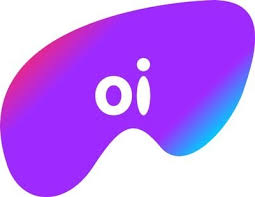
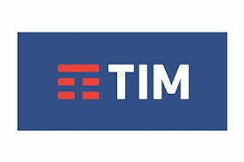

XYZNet |
A XYZNet é uma empresa provedora de serviços de internet com fibra óptica. Nossa prioridade é fornecer internet de qualidade e infraestrutura impecável para nossos região, buscandi proporcionar ao nosso cliente uma experiência satisfatora. Trabalhamos constantemente para aumentar nossa rede de cobertura e contribuir para o processo de inclusão digital.
Nossa equipe é composta de profissionais muito bem capacitados para demanda de nossos clientes. Nossos colaboradores passam por constantes reciclagens visando aumentar o conhecimento e levar satisfação aos nossos clientes.
A internet fibra óptica irá oferecer uma conexão mais estável se você usá-la com o cabo do modem conectado ao computador. Porém, quando falamos de internet via wireless (wi-fi), tanto na fibra óptica quanto na internet a cabo, existe uma perda considerável na velocidade contratada. Afinal, quando usamos a internet via Wifi, a luz é convertida em ondas de rádio novamente, o que faz com que boa parte da vantagem da fibra óptica acabe sendo perdida.
É a velocidade de recebimento de dados (como um arquivo, vídeo, etc) de outro computador ou servidor para um computador local através da Internet. Usuários domésticos tendem a realizar mais downloads do que uploads.
É a velocidade de envio de dados (como um arquivo, e-mail, foto, etc) de um computador em um local para um computador ou servidor em outro local, através da Internet. A velocidade de upload é geralmente muito menor do que a velocidade de download. A razão para isso é que as pessoas, ao acessar a Internet, geralmente fazem mais download do que upload.
Para contratação dos nossos planos de internet não é necessario possuir telefone fixo, nossas redes são de Fibra Óptica ponta a ponta, ou seja, desde nossos canais de distribuição até a casa do cliente, o que torna a utilização do telefone fixo não obrigatória
|  | |
|  |
 |